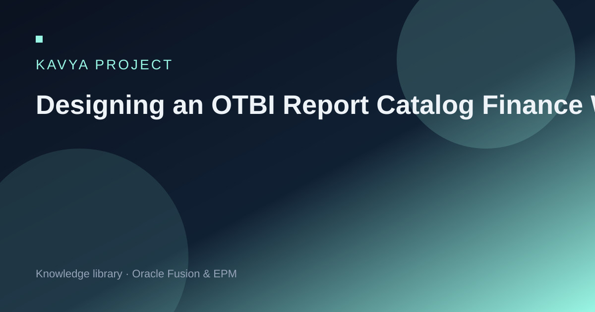

Trust is a design outcome
If two 'trial balances' disagree, users invent a third spreadsheet. Catalog discipline prevents that.
Naming, prompts, ownership, and official-vs-working report standards that reduce spreadsheet shadow systems.
Insight article from the Kavya Project knowledge library. Educational content only — not employment history or certification claims.

If two 'trial balances' disagree, users invent a third spreadsheet. Catalog discipline prevents that.
Prefer 'Close TB — Official' over 'GL Report 14'. Findability matters.
Ledger, period, and entity prompts should be consistent across the catalog.
Every official report has a business owner and a technical steward.
Old reports must die. Otherwise the catalog becomes a museum.